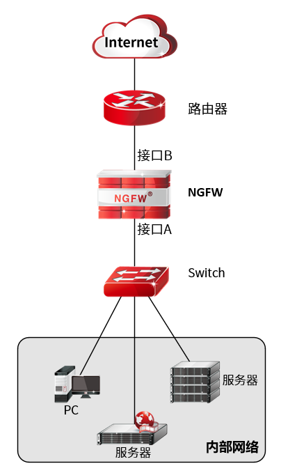

接口是设备与网络中其他设备交换数据并相互作用的枢纽，接口可以按照性质分为物理接口和逻辑接口。
l物理接口是指真实存在于设备上的接口，如设备上的以太网接口feth0等，广义的物理接口还包括Console口。
l逻辑接口是指物理上不存在，需要通过配置建立，但能够实现数据交换功能的接口。
NGFW支持的逻辑接口包括子接口、聚合接口和虚拟系统的VSYS虚接口。
l子接口是在路由模式的单个物理接口上配置的多个逻辑接口。子接口共用物理接口的物理参数配置，但有各自独立的链路层和网络层配置参数，如MAC地址和IP地址。在不增加物理接口的情况下，子接口是扩展路由接口的方案。
l聚合接口是将多个物理接口聚合成一个逻辑端口，可以使设备之间的带宽成倍增加、增强端口灵活性并提供链路冗余。当聚合接口内的某条链路出现故障时，该链路的流量将自动转移到其余链路上。
lVSYS用于虚拟系统中，是虚拟系统间、虚拟系统与根系统通信的接口。
接口模式
根据设备型号的不同，物理接口分为快速以太网接口（速率为10/100Mbit/s）、千兆以太网接口（速率为1000Mbit/s 和万兆以太网接口（速率为10000Mbit/s）三类。
NGFW的物理接口支持五种工作模式：路由模式、交换模式、虚拟线模式、BOND模式和listening模式。在实际应用中，用户可根据需求进行配置。
l路由模式
在路由模式下，接口为三层接口，工作在网络层，可配置IPv4或IPv6地址，对不同网段间的数据进行三层路由和转发。
l交换模式
在交换模式下，接口为二层接口，工作在数据链路层。处于同一个交换域的主机加入VLAN后，可以互相通过该VLAN进行通信，实现对数据二层转发。接口工作模式可分为Access模式和Trunk模式。
ØAccess模式：在Access模式下，同一接口只发送一个VLAN的报文，通常用于连接终端设备，如PC、服务器等。
ØTrunk模式：在Trunk模式下，同一接口可发送多个VLAN的报文，通常用于网络设备间互联，如交换机，路由器，防火墙等。
l监听模式
工作在监听模式的物理接口只接收进入该监听接口的流量，以供防火墙对流量进行分析，进而分析网络运行状况，防火墙并不能转发监听接口接收的数据报文。
l虚拟线模式
在NGFW设备中，一条虚拟线由接口A和接口B两个工作接口组成。配置虚拟线后，接口A接收到的数据包中除了目的地址为NGFW的数据报文外，都将直接从接口B转发出去。

lSLAVE模式
物理接口加入到聚合接口后，该物理接口将工作在SLAVE模式。关于聚合接口的配置具体请参见 聚合接口。